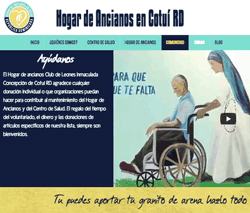

Develop & Produce
See Platform
Mulimedia Production
Interactive Video - The Activist Report is a cross platform political entertainment series. I produced all media content and developed the entire platform. Check out the interactive music video.

Website
Hogar Website
Content Strategy - Conducted on-camera client interviews to gather, organize, and coordinate the hierarchy of content to video, design, and development team members.

ME Process
Food Graphics
Motion Graphics
Visuals - Illistrator, Photoshop, After Effects, Primere, Edge Animate.. I have a close relationship with them all.
Commercial
Production Manager
Script, Cinematography - Directed production team and operated primary camera for esteem athletics website and social media video. Also, assisted with branding and website layout.